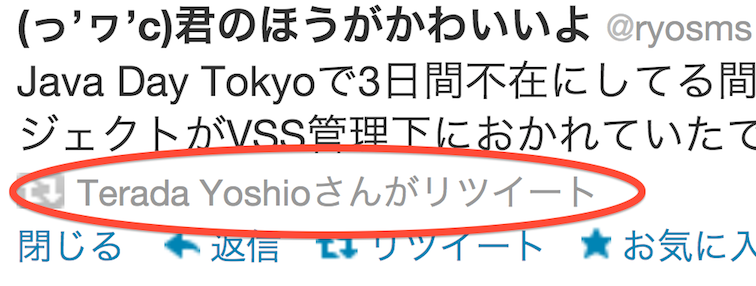

Java Day Tokyo 2013に参加して
2013/06/15 岡山Java User Group
@ryosms
自己紹介
ryosms
twitter: @ryosms
github: ryosms
・岡山Javaユーザ会 相談役
・パソコン交流会(岡山Gitユーザ会)
・日本AのつくJavaのようなものの会岡山支部
etc…
自己紹介
最近はベストツイートで自己紹介するのがトレンドと聞いて

本日のお品書き
- 前日（移動日）
- Java Day Tokyo当日
- 翌日（会社訪問Day）
- まとめ
Java Day Tokyo前日
- よみがえる前年の悪夢
Java Day Tokyo前日
- よみがえる前年の悪夢
- 結局なんの波乱もなく到着
Java Day Tokyo前日
- よみがえる前年の悪夢
- 結局なんの波乱もなく到着
- 夜は首都圏のAndroiderたちと酒盛り
Ingress #とは
- Googleの運営するARゲーム
- 陣取りゲーム
- 緑と青の2勢力
Ingress #とは
- Googleの運営するARゲーム
- 陣取りゲーム
- 緑と青の2勢力
- Java Day Tokyo 2013との関係？
Ingress #とは
- Googleの運営するARゲーム
- 陣取りゲーム
- 緑と青の2勢力
- Java Day Tokyo 2013との関係？
- ありません
- 強いて言えばAのつくアレなのでJavaのようなもので(ry
Java Day Tokyo 2013当日
イベントを通して受けた印象
- Project Lambda
- JavaFX
- ミニ四駆
- その他
Java Day Tokyo 2013当日
某okajug代表
Java Day Tokyo 2013当日
某okajug代表
「あー、それ、もうRubyで(ry」
Java Day Tokyo 2013当日
某okajug代表
「あー、それ、もうRubyで(ry」
某tkscala代表
Java Day Tokyo 2013当日
某okajug代表
「あー、それ、もうRubyで(ry」
某tkscala代表
「あー、それ、もうScalaで(ry」
Java Day Tokyo 2013当日
マサカリこわい
Java Day Tokyo 2013当日
マサカリこわい
私の場合
Java Day Tokyo 2013当日
マサカリこわい
私の場合
「で、それいつになったらAnd(ry」
Java Day Tokyo翌日
- 恒例のokajugメンバーによる会社訪問
- 昨年はTwitter Japanにお邪魔しました
- 今年訪問した会社
Java Day Tokyo翌日
- 恒例のokajugメンバーによる会社訪問
- 昨年はTwitter Japanにお邪魔しました
- 今年訪問した会社
- サムライズム（昨年に引き続きTwitter4Jのイケメンのお世話に）
得たもの：Red Bull
- サムライズム（昨年に引き続きTwitter4Jのイケメンのお世話に）
Java Day Tokyo翌日
- 恒例のokajugメンバーによる会社訪問
- 昨年はTwitter Japanにお邪魔しました
- 今年訪問した会社
- サムライズム（昨年に引き続きTwitter4Jのイケメンのお世話に）
得たもの：Red Bull - ウサギィ（オープンセミナーの時に実行委員権限を濫用しました←）
得たもの：海鮮丼
- サムライズム（昨年に引き続きTwitter4Jのイケメンのお世話に）
まとめ
公式のイベントに出席することの意味
公式というのはやはり強い中の人の話を直接聞ける / 質問できる- 場合によってはセッション外で直に話をする機会も
まとめ
遠征することの意味
- 他の地域の(勉強会等の)事情を知ることができる
- 岡山とどのように運営が違うのか
- 参加者の感じなど
- 交流が広がる
- SNSではよく絡んでるけど… → 会える(かもしれない)
まとめ
- 公式のイベントでしか得られないものもある
まとめ
- 公式のイベントでしか得られないものもある
- 他地域に遠征することで見えてくるものもある
まとめ
- 公式のイベントでしか得られないものもある
- 他地域に遠征することで見えてくるものもある
- Ingressやろうぜ、Ingress
おまけ
- Java Day Tokyo終了後

？！
- アイエエエエ！ テラダヨシオ!? テラダヨシオナンデ!?

ご静聴ありがとうございました